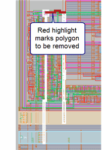

Selecting Polygons to Remove from the Short Path
A short is often caused by an unwanted metal or via polygon. You can virtually repair a short in Calibre RVE for LVS by marking polygons for removal. You can select polygons for removal using the Layout Shorts tab or select the polygons in a connected layout viewer.
If you mark a polygon for removal in a lower level cell, Calibre RVE also removes the polygon in identical cells at the same level in the hierarchy. You must include the BY CELL keyword in the LVS Isolate Shorts statement for this capability to work.
If you mark a via for removal and the via is part of a via array, all vias in the array are internally removed when short verification is run.
Prerequisites
Requirements described in “Interactive Short Isolation”
Procedure
- Mark a
polygon for removal using one of the following three methods:
Assign polygons in the layout viewer:
a. Right-click the short in the summary view and select Assign Polygons in Layout, or use the
 toolbar
button. This opens the Assign Polygons in Layout dialog box.
toolbar
button. This opens the Assign Polygons in Layout dialog box. b. Select REMOVE in the Assign Polygons in Layout dialog box.
c. Click in the polygon you want to remove in the layout viewer. The polygon is highlighted in red in the layout viewer, as shown in the image.
If more than one short polygon is found at the location, you are prompted to select the desired polygon.

Assign polygons in the Net column of short detailed view in Calibre RVE:
In Calibre RVE, click in the Net column of the polygon you want to remove.
Choose REMOVE in the dropdown list.
Right-click in the detailed view, select Assign Polygons, and choose REMOVE.
After a successful assignment, the Net column in Calibre RVE displays REMOVE and an asterisk (*) is placed next to the short listing in the summary view to indicate the short has been edited.
If the polygon marked for removal is part of a via array, all vias in the array are automatically marked for removal.